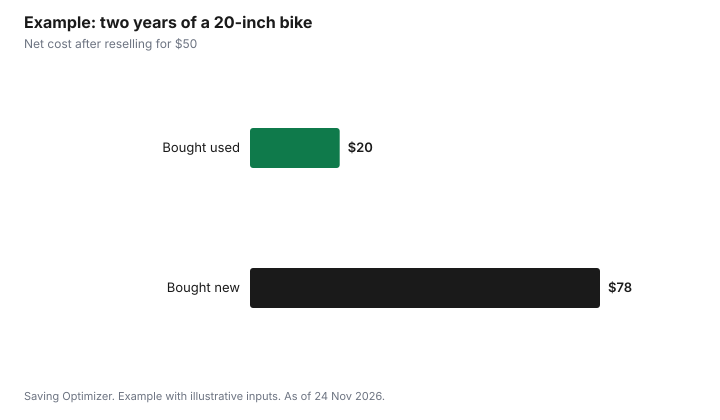

Kids · Canada
Kids' Bikes in Canada: Sizing, Buying Used and Reselling

Kids outgrow bikes every couple of years, so buying used and reselling is the cheapest approach. New 20-inch bikes cost about $128 to $198 at Walmart.ca, and used ones often sell for about half. Size by inseam, not age. Buy the helmet new or from someone you trust, because a bike helmet must be replaced after any crash.
Key takeaways
- New 20-inch kids' bikes: $128 to $198 at Walmart.ca (checked 24 Nov 2026).
- Used 20-inch bikes often list for about half, such as $70.
- Size by inseam: your child should stand over the frame with feet on the ground.
- Health Canada: bike helmets must be replaced after a crash, even with no visible damage.
- Don't buy a helmet for your child to grow into.
Prices
| Bike | Price |
|---|---|
| Huffy Rock It 20-inch (Walmart.ca) | $128 |
| Hyper Swift 20-inch (Walmart.ca) | $198 |
| Used Supercycle 20-inch (Karrot listing) | $70 |
Used-bike checks
- Brakes stop the bike firmly.
- Chain runs smoothly without rust.
- Tires hold air and aren't cracked.
- Frame has no cracks or bends.
- Wheels spin straight and the seat post isn't seized.

Buy and resell: an example
Example: you buy a used 20-inch bike for $70 and sell it two years later for $50. The bike cost $20, plus a new helmet. A new $128 bike resold for $50 costs $78.
See second-hand kids' gear safety and bike tune-up costs.
Sources
- Walmart.ca, Huffy Rock It 20-inch and Hyper Swift 20-inch, checked 24 Nov 2026.
- Karrot, Supercycle 20-inch girls' bike listing, checked 24 Nov 2026.
- Health Canada, Helmet safety (8 Dec 2025), checked 24 Nov 2026.
Frequently asked questions
What size bike does my child need?
Size by inseam: they should stand over the frame with both feet on the ground.
Is it safe to buy a used kids' bike?
Yes, if the brakes, chain, tires and frame are in good shape.
Can I buy a used bike helmet?
Health Canada says not to buy used helmets if you don't know their history.
How much is a kids' bike in Canada?
Walmart.ca listed 20-inch bikes at $128 to $198 when checked on 24 Nov 2026.
When should I sell my child's old bike?
In spring, when demand is highest.
Researched and drafted with AI assistance and fact-checked against official Canadian sources. How we create content.
Note: Prices change. Resale prices are examples. Education only.